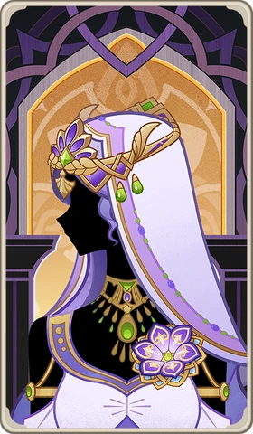

Sumeru · Gods & Divinity
Nabu Malikata
Nabu Malikata, the Goddess of Flowers, shaped Sumeru’s desert myths and Jinn traditions. Later quests connect a fragment of her remains to Collei.

A goddess remembered through different sources
Nabu Malikata is the Goddess of Flowers, also called the Lord of Flowers and Mistress of Oases. Her history is scattered across Jinn traditions, desert artifacts, books, and quest dialogue. These sources preserve different viewpoints rather than one uninterrupted biography.
The Scroll of Streaming Song is connected to her, but its first volume is itself labeled as a torn page whose author has not been confirmed. Treat it and the artifact-set accounts as evidence with their own framing.
The Jinn and the desert garden
Flower of Paradise Lost describes a goddess cast aside by the heavens who wanders the waste for seventy-two nights. In its poetic account, her wounds become springs; water lilies grow from them and give rise to the Jinn. The Jinn welcome her as their mistress and ask her to remain in the garden.
The same set connects Padisarahs with the purple flowers that bloom where she walks. These images explain how the Jinn remember their origin and the goddess’s relationship to their desert home; they are not a detached geological account.
Deshret, Rukkhadevata, and the desert alliance
Other records place Nabu Malikata alongside King Deshret and Greater Lord Rukkhadevata. The later account told by Thoth calls their meeting a covenant to share wisdom in Sumeru, while artifact texts frame the Goddess of Flowers’ knowledge of celestial secrets and Deshret’s ambitions in a more personal and tragic register.
The sources describe her as revealing knowledge to Deshret and making a final choice connected to his plans. They do not give a single neutral account of her motives, the alliance’s exact chronology, or every detail of how the desert kingdom fell.
Her remains and Collei
In Song of the Welkin Moon: Act IX, Nicole identifies a small fragment of Nabu Malikata’s remains as what the Fatui injected into Collei. The fragment is small enough that others could not easily sense it. Liloupar later stresses that Collei is not Nabu Malikata and is nothing like her.
This is a consequential link between the ancient goddess and a present-day character, but the dialogue does not present Collei as her reincarnation or the goddess herself returned. It describes a remnant used in an experiment and preserves Collei’s separate identity.
Death and what remains uncertain
The accounts treat Nabu Malikata as dead. Deshret’s remembrance, the Eternal Oasis, Jinn traditions, Padisarahs, and the fragment found in Collei show how her influence persists after her death.
The sources leave room around her exact origin, the full story of her exile, and the intention behind her final choice. Keep the mythic voice of the artifacts, later historical dialogue, and the newly revealed fragment distinct as you compare them.
This is an original CoreGG reading guide, not an official HoYoverse article or a reproduction of the game text. Source links below identify the records used so you can check the original context.
Sources & references
Check these sources for the original game text and reference trail.
- HoYoDex · Nabu Malikata reference and in-game citations
- Genshin Impact Wiki · Goddess of Flowers records
- Genshin Impact Wiki · Flower of Paradise Lost artifact lore
- Teyvatica · As All Falls to Emptiness transcript
- Teyvatica · Of Myriad Paths, Flux, and Dissolution transcript
- Genshin Impact Wiki · Scroll of Streaming Song